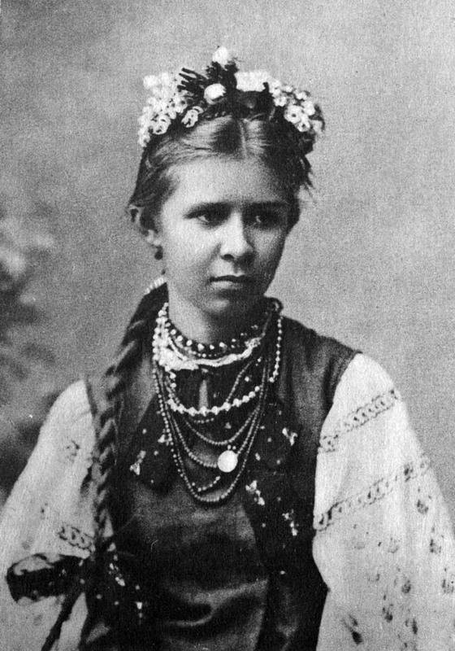

Леся Українка (Лариса Петрівна Косач) народилася 25 лютого 1871р. у Новограді-Волинському. Мати її — письменниця Олена Пчілка — і батько — юрист — багато уваги приділяли гуманітарній освіті дітей, розвивали інтерес до літератури, вивчення мов, перекладацької роботи. Серед близького оточення майбутньої поетеси були відомі культурні діячі: М. Драгоманов (її дядько по матері), М. Старицький, М. Лисенко. Все це сприяло ранньому входженню Лесі в літературу: в дев'ять років вона вже писала вірші, у тринадцять почала друкуватись.
У 1884р. у Львові в журналі "Зоря" було опубліковано два вірші ("Конвалія" і "Сафо"), під якими вперше з'явилось ім'я — Леся Українка.
Дитячі роки поетеси минали на Поліссі. Взимку Косачі жили в Луцьку, а літом — у с. Колодяжне. Серед факторів, які впливали на формування таланту Лесі Українки, була музика. "Мені часом здається, — писала вона, — що з мене вийшов би далеко кращий музика, ніж поет, та тільки біда, що натура утяла мені кепський жарт". Цей "жарт" — початок туберкульозу, з яким вона боролась усе життя. Хвороба спричинилась до того, що дівчинка не ходила до школи, однак завдяки матері, а також М. Драгоманову, який мав великий вплив на духовний розвиток Лесі Українки, вона дістала глибоку і різнобічну освіту. Письменниця знала більше десяти мов, вітчизняну і світову літературу, історію, філософію. Так, наприклад, у 19 років вона написала для своєї сестри підручник "Стародавня історія східних народів".
У 1879р. було заарештовано і вислано до Сибіру тітку Лесі Олену Косач, яка належала до київського гуртка "бунтарів", там же, в Карійській тюрмі, загинула мати її найближчої товаришки — Марія Ковалевська. Враження тих літ виявилися такими сильними й пам'ятними, що пізніше ожили у віршах "Віче", "Мати-невільниця", "Забуті слова", "Епілог". Ідеалом для поетеси стає герой, який, пробитий списом, шепоче: "Убий, не здамся!"
З кінця 80-х рр. Леся Українка живе у Києві.
На початку 1893р. у Львові виходить перша збірка поезій Лесі Українки — "На крилах пісень". Збірку відкриває цикл лірики "Сім струн", з якого постає образ "бездольної матері" України, що дістає свій розвиток у циклі "Сльози-перли". Два наступних цикли — "Подорож до моря" і "Кримські спогади" — привертають увагу не тільки любов'ю до рідної землі, красою пейзажних малюнків, а й плином рефлексій ліричного героя, думка якого раз по раз звертається до проблеми волі і неволі. Серед вміщених у збірці творів виділяється вірш "Contra spem spero", що сприймається як кредо молодої письменниці, декларація її незнищенного оптимізму. Та особливо гостро — як заклик і гасло — прозвучали у тогочасній суспільній атмосфері "Досвітні огні".
1892р. у Львові виходить "Книга пісень" Г. Гейне, де Лесі Українці належали 92 переклади. Вона перекладає також поезію в прозі І. Тургенева "Німфи", уривок з поеми А. Міцкевича "Конрад Валленрод", поетичні твори В. Гюго "Лагідні поети, співайте" і "Сірома", уривки з "Одіссеї" Гомера, індійські обрядові гімни із збірки "Ріг-Веди". Як перекладач Леся Українка додержує принципу змістової точності, уникає стилізації.
Початок роботи Лесі Українки над прозовими жанрами пов'язаний з діяльністю гуртка київської літературної молоді "Плеяда". Тут готували видання для народу з історії, географії, перекладали твори російських та зарубіжних письменників; гуртківці писали і власні твори, які оцінювались на конкурсах. Так були написані і деякі оповідання Лесі Українки, присвячені переважно соціально-побутовим темам. Вони друкувалися в журналах "Зоря" ("Така її доля", "Святий вечір", "Весняні співи", "Жаль"), "Дзвінок" ("Метелик", "Біда навчить").
Через хворобу Лесі Українці доводилось багато їздити по світу. Вона лікувалася в Криму і на Кавказі, у Німеччині і Швейцарії, в Італії та Єгипті. І хоча чужина завжди викликала в неї тугу за рідним краєм, але й збагачувала новими враженнями, знанням життя інших народів, зміцнювала й поглиблювала інтернаціональні мотиви її творчості.
19 травня 1843 року Т.Г. Шевченко разом із Є.П. Гребінкою їде в Україну. Зупинився Т.Г. Шевченко в Качанівці, яка належала Тарновському. Із Качанівки поет виїздить до Києва, де виконує кілька малюнків історичних пам'яток. Під час перебування у Києві він познайомився з М. Максимовичем, П. Кулішем та з художником Сенчило-Стефановським, із яким вони 1846 р. брали участь у розкопках могили Переп'ятихи біля Фастова. Із Києва Шевченко поїхав до Гребінки в "Убіжище" біля Пирятина, а звідти до с. Мойсівки (тепер с. Мосівка Драбівського району на Черкащині), де знайомиться з О. Капністом, П. Лукашевичем. Разом із ними Шевченко побував у Яготині в маєтку Рєпніних. На деякий час Шевченко знову приїздить до Києва, потім відвідує Запорізьку Січ, острів Хортицю, села Покровське, Чигирин, Суботів. У серпні 1843 р. у селі Березівка письменник побував у П. Лукашевича. У вересні Т. Шевченко відвідує Кирилівку, зустрічається з братами і сестрами, пише малюнок "Хата батьків Т.Г. Шевченка в с. Кирилівці".
Збірки Лесі Укаїнки: